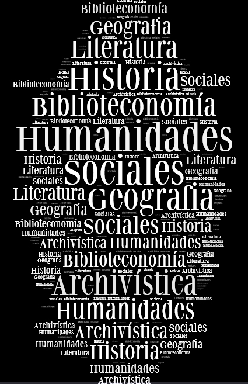

¡Inspírate con estos Apuntes Creativos para tu Próximo Proyecto!
¡Inspírate con estos Apuntes Creativos para tu Próximo Proyecto!
¿En busca de nuevas ideas para tu próximo proyecto? ¿Estás en una encrucijada creativa y no sabes por dónde empezar? ¿Estás desesperado por encontrar la inspiración para tu próximo proyecto? Si es así, los apuntes creativos podrían ser la solución.
Los apuntes creativos son una forma de pensamiento creativo que te ayudará a desarrollar tu proyecto. Esta técnica se ha utilizado durante mucho tiempo en la industria creativa, como diseño, publicidad y moda, para generar nuevas ideas y conceptos. Esta técnica se basa en la premisa de que la inspiración se encuentra en todas partes, desde la naturaleza a la cultura, la tecnología y la historia. Esto significa que los apuntes creativos son una herramienta invaluable para los creativos que buscan inspiración para sus proyectos.
Los apuntes creativos también son una forma útil de desbloquear el proceso creativo. Esto se debe a que esta técnica se basa en la idea de que la inspiración surge de la exploración de ideas y conceptos. Esto significa que, a medida que exploras y buscas inspiración para tu proyecto, también estás generando nuevas ideas para tu proyecto. Esto te ayudará a desarrollar una comprensión más profunda de tu proyecto y te ofrecerá nuevas maneras de abordar el proyecto.
A continuación, te ofrecemos algunos consejos sobre cómo usar los apuntes creativos para tu próximo proyecto:
1. Busca inspiración en todas partes
Como se señaló anteriormente, los apuntes creativos se basan en la premisa de que la inspiración se encuentra en todas partes. Esto significa que deberías buscar inspiración en todos los ámbitos de tu vida. Esto incluye desde la naturaleza a la cultura, la tecnología y la historia. Esto significa que es importante que te tomes el tiempo para explorar y experimentar con diferentes áreas. Esto te ayudará a encontrar nuevas ideas y conceptos que podrían ayudarte a desarrollar tu proyecto.
2. Utiliza tus sentidos
Los apuntes creativos también se basan en el uso de los sentidos para encontrar inspiración. Esto significa que deberías buscar formas de experimentar con los sentidos para encontrar inspiración. Esto incluye desde escuchar música a probar nuevos sabores y olores. Esto te ayudará a desarrollar nuevas ideas y conceptos que podrían ayudarte a completar tu proyecto.
3. Utiliza herramientas creativas
Los apuntes creativos también se basan en el uso de herramientas creativas para encontrar inspiración. Esto significa que deberías buscar herramientas creativas que te ayuden a explorar y experimentar con ideas y conceptos. Esto incluye desde herramientas de diseño a herramientas de programación. Estas herramientas te ayudarán a desarrollar tu proyecto de una manera más rápida y eficiente.
4. Establece metas
Una vez que hayas encontrado la inspiración para tu proyecto, es importante que establezcas metas para tu proyecto. Esto te ayudará a mantenerte enfocado y a asegurarte de que tu proyecto se desarrolle como estaba previsto. Esto también te ayudará a mantenerte motivado y a alcanzar tus objetivos.
5. Aprende de tu trabajo
Es importante que aprendas de tu trabajo cuando lo estés desarrollando. Esto significa que debes mirar atrás y evaluar tu trabajo para ver qué funcionó y qué no funcionó. Esto te ayudará a mejorar tu trabajo y a aprender de tus errores. Esto también te ayudará a desarrollar una mejor comprensión de tu proyecto y te ofrecerá nuevas maneras de abordar tu proyecto.
Los apuntes creativos son una herramienta invaluable para los creativos que buscan inspiración para sus proyectos. Esta técnica se basa en la premisa de que la inspiración se encuentra en todas partes, desde la naturaleza a la cultura, la tecnología y la historia. Esto significa que los apuntes creativos son una forma útil de desbloquear el proceso creativo y de generar nuevas ideas y conceptos. Estos consejos te ayudarán a usar los apuntes creativos para encontrar la inspiración que necesitas para tu próximo proyecto.